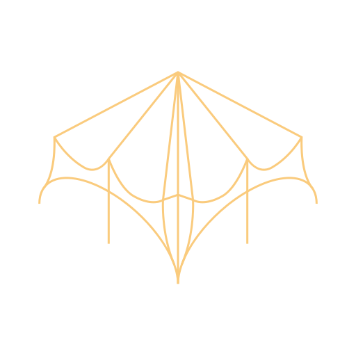

100% akceleracja GPU bez zacinania
Złoty obrys frontowych krawędzi. Tył całkowicie zasłonięty.
Wyrazisty obrys zewnętrzny bryły z okluzją głębi.
Złote linie + subtelne dwutonowe cieniowanie powierzchni.
Świecące krawędzie ze złotym metalicznym refleksem.